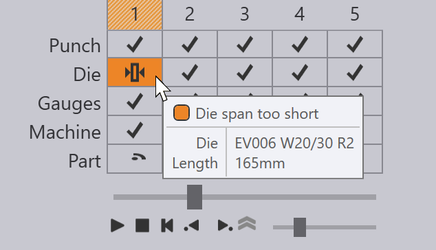

Create Bend Solution
You can create Bend Technology Data for a sheet-metal part using the Bend module. This is also called tooling up the part for bending. Let us assume you have already installed a machine, and that you have configured the tool inventory, and that you have imported a CAD part (2D or 3D):

Switching to Bend CAM
Now, the part can be tooled up for bending by just pressing the B key. The part is tooled up with the default bending machine, which is the press-brake you most recently used. A tooling sequence, bend setup, gauging positions are all computed, and you should see a result like this:
If there are no errors, the NC code (and possibly the setup-sheet) for the part are also generated, and saved into the output folder that is set up for this machine. Here is a section from a typical part-setup sheet[1] (also known as a bend report).
| See also the the Workflow panel, which can be accessed by pressing the W key. This provides more control over creating bend technology data, and options for routing the part through laser CAM, nesting etc. |
Further Operations
Here is a quick summary of some of the operations you can do once a part has been tooled up for bending. The following pages of this manual provide more detail about each of these operations.
-
If you click the Spacebar, a bending simulation starts. You can also use the simulation controls on the Bend Navigator to start, stop or rewind the simulation:

-
If there are any warnings or errors, they show up in the Bend Navigator, and you can view those and solve them by clicking on the corresponding cells:
 -
You can edit the bend tooling (punches and dies), the gauging setup, or the angle measurement setup by just clicking directly on that object in the simulation view:

-
You can change the machine by clicking on the machine name in the tab below the part, and selecting a different machine:
-
Click on the settings
 icon on the toolbar along the left
to edit additional settings for
each bend (or to edit the default settings used for this bending machine, or for the entire
JFY Bend application).
icon on the toolbar along the left
to edit additional settings for
each bend (or to edit the default settings used for this bending machine, or for the entire
JFY Bend application). -
Click on the display
 icon on the left toolbar to edit the
view of the machine - you can turn the display of additional components like the die rail,
the bending beam, the back-gauge support system on or off. You can also turn various
components translucent.
icon on the left toolbar to edit the
view of the machine - you can turn the display of additional components like the die rail,
the bending beam, the back-gauge support system on or off. You can also turn various
components translucent.
When a bend solution is created, if there are no errors, the part NC code is generated. You can control this behavior (whether the NC code is generated automatically) from the Bend Outputs page of the Machine Default settings. You can also use the same page to control if a setup sheet is automatically generated whenever NC code is generated. If code has been generated, the nc-code button in the left toolbar is grayed out:

As you make any changes to the part, this button becomes enabled again, and you can re-generate the NC code by clicking on this icon again (or by pressing the C key).